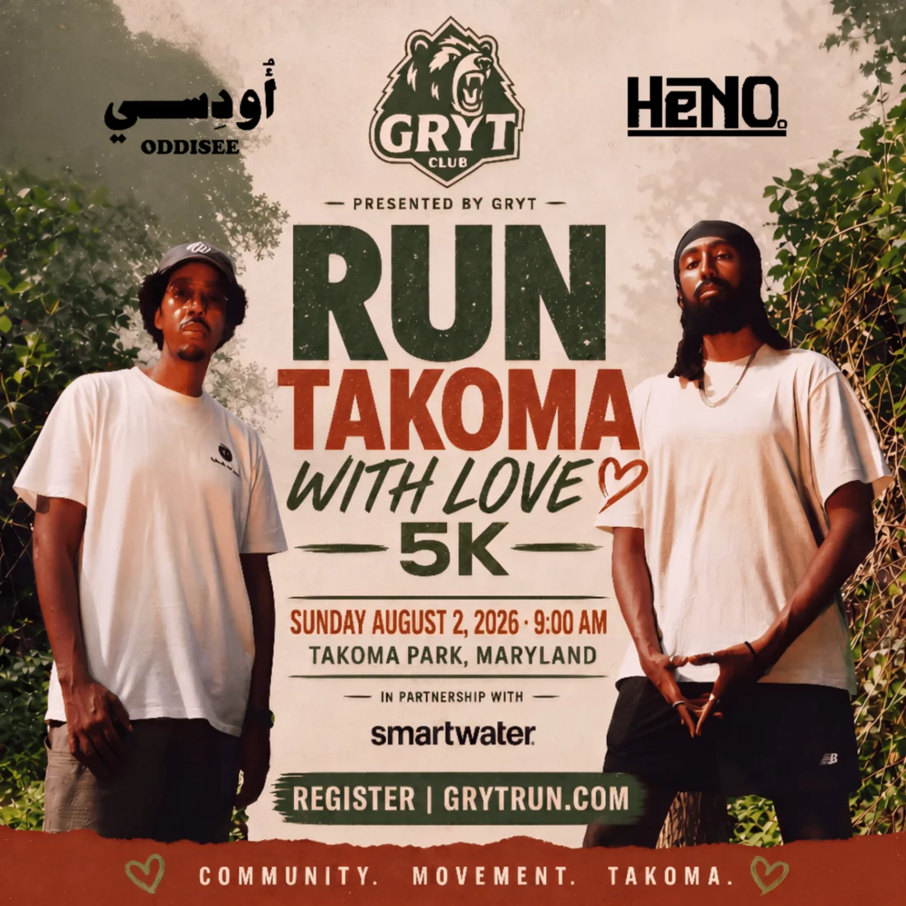
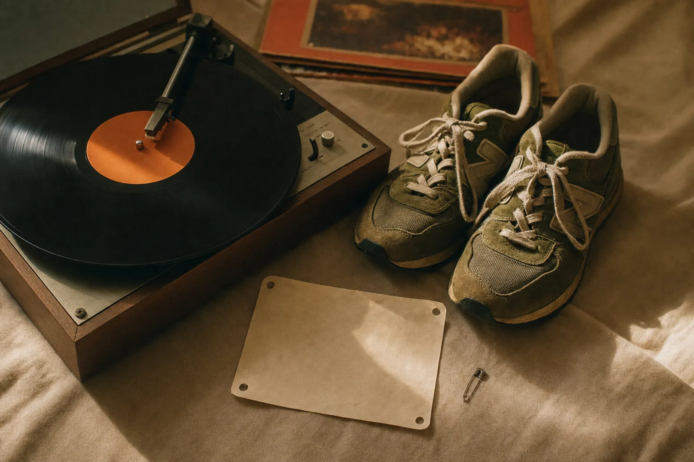
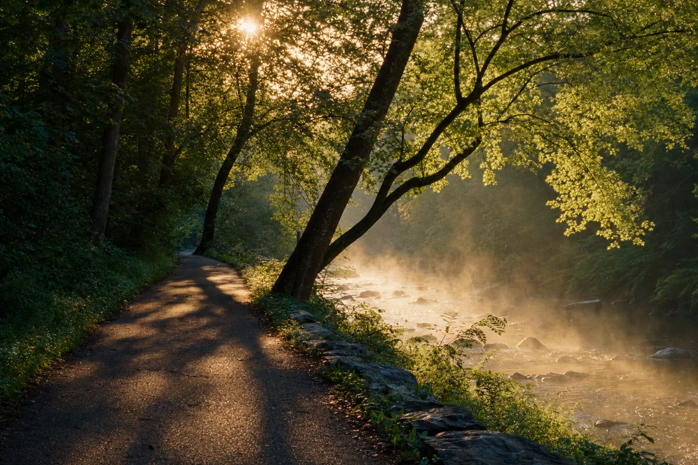
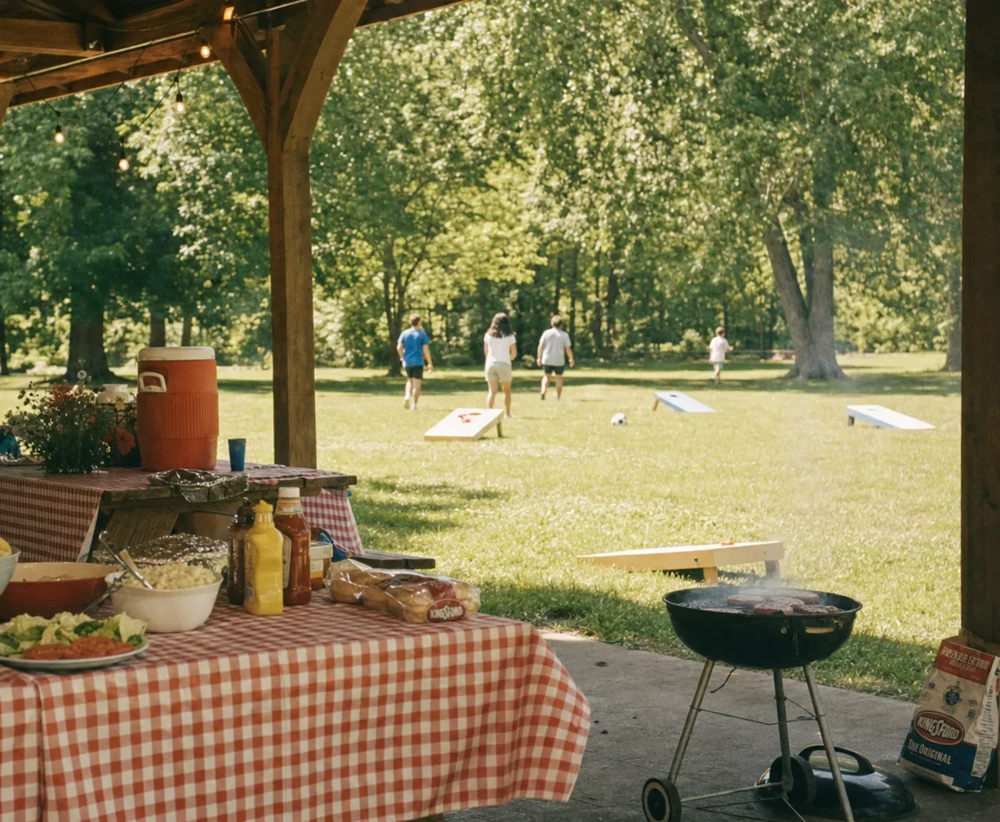

Runners, not thousands
Capped at 100 so every finisher gets cheered home by name. When it's full, it's full — that's the whole point.

Presented by GRYT
Sunday · August 2, 2026 · Check-in 8:30 AM
Takoma Park, Maryland
Every good race starts with a story. This one starts with an album, a friendship, and a park worth loving out loud. Scroll for ours.
The True Story
On April 30, 2026, Oddisee and Heno. released From Takoma With Love on Outer Note — twelve tracks written as a love letter to the block that raised them both. Not nostalgia — gratitude. Two artists, a generation apart, writing home to the same neighborhood.
Some albums are made for the charts. This one was made for a zip code. It doesn't romanticize Takoma Park — the porches, the corner stores, the people who knew them first. It thanks it. That's the rare kind of project: artists pointing their work back at the place that made them. Not a victory lap. A returned favor.
Four hundred miles away in Pittsburgh, one of the first listeners wasn't a stranger.

press play, lace up ♡
Twelve tracks for the training block — start it now, thank us at the finish line.
Nick × Heno.
Nick Merich and Heno. have been partners longer than they've been anything else — five years of joint ventures across music and tech. They met through SongLink, the music-tech company Nick founded and later sold, and kept building side by side through Nick's growth years at Mint Songs and Kids AI. Some things worked, some didn't. All of them were built on the same handshake.
Two years ago, Nick's hardest project stopped being a company. It became his own body. Early mornings. Long miles. Doing hard things until it turned into GRYT Club, a running community built around one idea: do hard things, together.
So when From Takoma With Love dropped, Nick heard it twice — once as a listener, once as a builder. An album about giving back to a neighborhood. A life rebuilt one run at a time. Those two things were always going to collide. The call was a short one: bring the album home to the park it was written for, as a run — supporting Heno.'s community, and the neighborhood both artists came up in, in the most physical, positive way there is.
“Heno. made a record about where he's from. We're making a morning about it.”
— Nick Merich, GRYT Club

The Vision
Most races want to be bigger every year. This one wants to be better. One hundred people, one park, one morning — built so that nobody finishes anonymous.
Capped at 100 so every finisher gets cheered home by name. When it's full, it's full — that's the whole point.
Free RSVP, no admission fee, ever. Community events should cost you a Sunday morning, not a paycheck.
Just a park, a route, and neighbors. The soundtrack is footsteps, the creek, and people calling your name.
A stocked hydration station at the shelter, supported in-kind by smartwater — plus a second stop on the route the moment the parks team gives it the nod.
The Day
At the covered picnic shelter — our HQ for the day. Grab your bib, say hi to a stranger. ADA parking and accessible paths stay clear all morning.
Why we're here, how the route works, and a thank-you to the volunteers in the bright vests. Then we stage in calm, easy waves.
Out through the park to the open parkway and back — marshals at every turn and both road crossings. Run it, jog it, walk it: every pace is the right pace.
Everyone funnels back to the shelter for smartwater and loud cheering. We stay until the last finisher is home.
Lawn time. Introductions, stories, and the strangers you started with turning into people you know.
Easy, unhurried time in the park — group photo, catch-up, room to just be neighbors. No stage, nothing amplified.
Pre-packaged snacks and water at the shelter while the conversation keeps going — final details land in your runner email.
Group photo, gratitude, and one last look at the park that started all this.
By two o'clock we've packed out every sign, cup and crumb. We leave the park better than we found it.

The Park
Tucked where the neighborhood meets the trees, with the Sligo Creek trail corridor breathing right alongside it. The covered shelter anchors the day; the green does the rest.
our promise to the neighborhood ♡
The course — park to the open parkway & back
Good Questions
Really. Free RSVP, no admission fee, ever. Your only job is to show up and bring your best Sunday-morning energy.
Yes — run, jog, walk, stroll. Every pace is the right pace, and we hold the finish line open until the last person is home. Walkers are runners here.
This is exactly for you. A 5K is 3.1 miles, the course is gentle, and a hundred people will be cheering your name by the end. First-timers get the loudest finish.
Yourself, a water bottle, a picnic blanket, and someone who swore they'd never do a 5K. Carry your bottle for the route — the shelter has water, first aid, and the gathering after.
There's an improved lot at the park, and ADA spaces and accessible routes stay clear all day. Arrive by 8:30 AM and carpool, bike, or walk if you can — it's a neighborhood park, so be a good neighbor. Existing park restrooms are on site.
We run rain or shine — the shelter is covered for a reason. If weather ever makes the course unsafe, every registered runner gets an email update the moment we know.
Yes — the day runs as a permitted community walk/run and park gathering with Montgomery Parks. Small footprint, volunteer marshals at the road crossings, nothing amplified, and a full leave-no-trace cleanup by 2:00 PM.
Please. A crew of 6–10 makes the morning work — route marshals, check-in, water, cleanup. RSVP at grytrun.com and tell us you want a vest instead of a bib.
Leashed dogs and strollers are welcome at a walking pace — just line up toward the back at the start so everyone gets a clean first quarter mile.
Sunday · August 2, 2026 · Check-in 8:30 AM
Free RSVP. When it's full, it's full. Grab your spot and bring somebody.
Register | grytrun.com